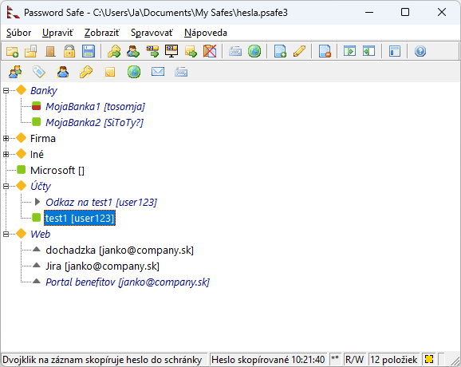
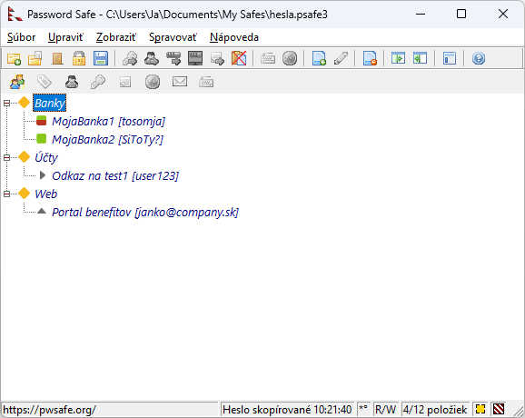

Menu Zobraziť ovláda dostupné možnosti zobrazenia. Môžete prepínať medzi 2 spôsobmi zobrazenia záznamov: buď ako jeden zoznam (Plochý zoznam), alebo usporiadané podľa kategórie (Vnorený strom). Môžete si vybrať či sa má zobraziť panel nástrojov, a ak áno či sa majú použiť ikony panela nástrojov "Klasický" alebo "Nový". Samotný panel nástrojov je tiež prispôsobiteľný. Môžete tiež rozbaliť alebo zbaliť všetky zobrazené skupiny v zobrazení vnoreného stromu, zobraziť podmnožiny záznamov, filtrovať zobrazené záznamy tak aby zodpovedali ľubovoľným kritériám, vybrať písmo, v ktorom sa záznamy zobrazujú, a zobraziť reporty o zlúčení, porovnaní, importe a ďalších operáciách.
Ak chcete zobraziť alebo skryť panel nástrojov, začiarknite alebo zrušte začiarknutie položky menu Panel nástrojov je viditeľný.
Ak chcete použiť "nové" alebo "klasické" ikony panela nástrojov, vyberte položku menu "Nový panel nástrojov" alebo "Klasický panel nástrojov".
"Drag & Drop" je špeciálny panel nástrojov, ktorý umožňuje vložiť časti aktuálne vybraného záznamu "presunutím" ikony,
ktorá určuje pole ktoré chcete vložiť, na miesto kam ho chcete vložiť. Napríklad ak chcete vložiť text "Poznámky" daného záznamu do inej aplikácie pomocou tohto panela,
vyberte nejaký záznam a potom pretiahnite príslušnú ikonu z panela do aplikácie. Po uvoľnení ľavého tlačidla myši sa obsah poľa Poznámky vloží do aplikácie.
Panel ukazuje "sivé" ikony pre polia, ktoré sú vo vybranom zázname prázdne.
Tlačidlo "AutoType" sa správa trochu inak: Pretiahnutím do vstupného poľa v inom okne (napr. prehliadač) Password Safe spustí v danom okne automatické dopĺňanie.
Poznámky:
Rozbalí všetky skupiny a zobrazí všetky záznamy (Iba zobrazenie vnorený strom).
Zbalí všetky skupiny (Iba zobrazenie vnorený strom).
Položky v submenu "Zobraziť iba" sú preddefinované filtre, ktoré po výbere zobrazujú iba položky, ktoré zodpovedajú ich kritériám.
Ako všetky filtre, aj tieto je možné vymazať dvojitým kliknutím na červeno-bielo pruhovaný indikátor "aktívny filter" v pravom dolnom rohu stavového riadka, ako je vidieť na nasledujúcom obrázku, kde je filter aktívny.
Ak je položka Uložiť databázu ihneď po akejkoľvek zmene v Nastaveniach na karte Zálohy nezaškrtnutá, zmenené záznamy sa neuložia okamžite, ale zobrazia sa inou farbou. Pozrite si nasledujúci obrázok:
Zoznam všetkých záznamov:

Zaškrtnutím tejto položky sa zobrazia iba zmenené a neuložené záznamy. Ak je tento filter aktívny a uložíte zmeny v databáze, tak sa filter zruší a zobrazí sa celá databáza.
Zoznam všetkých zmenených záznamov:

Poznámka: Pokiaľ existujú nejaké neuložené záznamy, bude sa v stavovej oblasti v dolnej časti okna aplikácie zobrazovať znak "*".
Ak vyberiete túto položku menu, v zozname sa zobrazia iba záznamy s definovaným dátumom expirácie. Nezáleží na tom, či je dátum expirácie v minulosti alebo budúcnosti.
Ak nie sú k dispozícii žiadne záznamy s dátumom expirácie, táto položka menu bude automaticky sivá.

Ak vyberiete túto položku menu, zobrazia sa iba záznamy, ktoré boli nájdené počas poslednej operácie vyhľadávania. Ak vyhľadávanie nebolo vykonané alebo bolo vymazané, potom bude táto položka menu sivá. Ak bol panel Vyhľadávania viditeľný, keď bol tento filter aktivovaný, bude zatvorený pretože pokiaľ je tento filter aktívny, nie je možné vykonať žiadne nové vyhľadávania. Klávesy Nájsť ďalší (F3) a Nájsť predchádzajúci (Shift-F3) budú stále dostupné.
Poznámka: Ak je tento filter aktívny, je založený na zobrazovaní záznamov v databáze, ktoré boli nájdené počas poslednej operácie vyhľadávania a iba týchto, t.j. Operácia vyhľadávania
sa nezopakuje, ak sa databáza zmení. Napríklad:
"Filter" je kritérium (alebo sada kritérií), ktorým záznam buď zodpovedá alebo nezodpovedá. Password Safe vám umožňuje definovať filtre a zobraziť iba tie záznamy, ktoré zodpovedajú danému filtru. Viac informácií o definovaní a používaní filtrov nájdete v téme Filtrovanie záznamov.
Vyberte iné písmo na zobrazenie záznamov v zozname alebo strome a na zobrazenie hesiel v dialógových oknách Pridať a Upraviť záznam. Môžete tiež určiť písmo, ktoré sa má použiť vo virtuálnej klávesnici. Upozorňujeme, že toto písmo musí byť schopné zobraziť znaky Unicode. Podporované písma zahŕňajú: "Arial Unicode MS" (ktoré je súčasťou balíka Microsoft Office), "Arial Unicode" a "Lucida Sans Unicode", hoci môžete vybrať iné pomocou príslušnej položky menu.
Ak uložíte výsledky operácií Porovnať, Exportovať, Vyhľadať, Importovať, Zlúčiť, Synchronizovať a Overiť na disk, uložia sa do rovnakého priečinka ako databáza. Ak zopakujete jednu z týchto operácií a znova uložíte správu na disk, prepíše sa akákoľvek predchádzajúca správa pre túto operáciu bez opýtania. Tieto správy si môžete pozrieť neskôr, keď otvoríte databázu v tom istom adresári.
Obnoví zobrazenie buď stlačením klávesu F5, alebo kliknutím na túto položku ponuky.